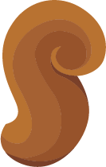
點我 問我
Ｘ
♥ 去野餐： HiHi 去野餐 ! 野餐趣 ! 有什麼想問我呢?
- 價格
- 客製
- 遊戲
- 優惠
- 最新消息
 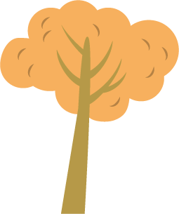
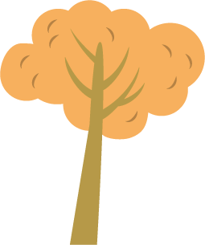
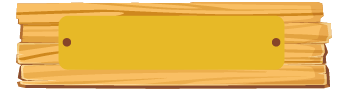 關於野餐趣 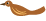
平常吃太多宵夜街的油膩食物，過著高壓的生活，有時候會想像著如果能夠悠閒在草地或自然野地上吃些自備的輕食，頭上就是天空和雲朵，就這麼清閒度過週日的午後，該有多好呢！而且！提到野餐，當然就會想到野餐籃啦！野餐籃幾乎是野餐的標誌呢。
“野餐趣“的我們以此想法為發源，為大家創造屬於自己的獨一無二的野餐籃，這樣就能夠在滿地的野餐團裡一眼就認出自己的小小野餐天地啦！
可愛的蝴蝶結、優雅的緞帶、親手寫下的標記、喜愛的色調、散發木質清香的籃子等，不要再用塑膠袋裝食物了，在這裏就可以擁有屬於你的野餐樂趣小確幸。還在等什麼呢？繼續看更多關於我們野餐趣的故事吧！
野餐故事
 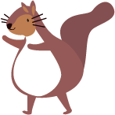
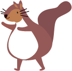
來到我們的網站，首先最重要的功能就是可以客製屬於你的獨一無二的野餐籃！依照指示跟著步驟選擇籃子外型、顏色、裝飾，最後幫籃子取個創意無限的名字，就完成啦！
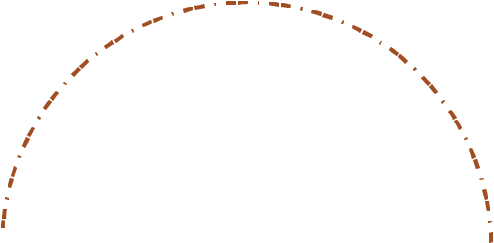
5
4
3
2
1
美美的籃子客製出來後，為他提供一個舞台發光發熱吧！在這裡有許多經過巧思設計的籃子，除了提著自己精心設計的籃子去參賽以外，不妨也來投投別人一票吧！如果幸運的得到前三名，還可以得到豐富的點數獎勵呢！沒有得到名次也不必灰心喔，參賽者都有小小的點數獎勵呢！

1234567
除了籃子以外，往往也需要其他精緻的餐具和周邊商品啊！在這裡可以購買許多實用好看的野餐用品喔，比如說木製叉匙、野餐盤、野餐墊、甚至是小小野餐籃！
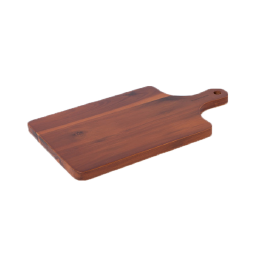
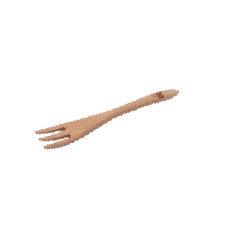
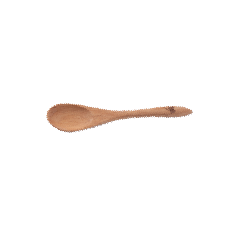
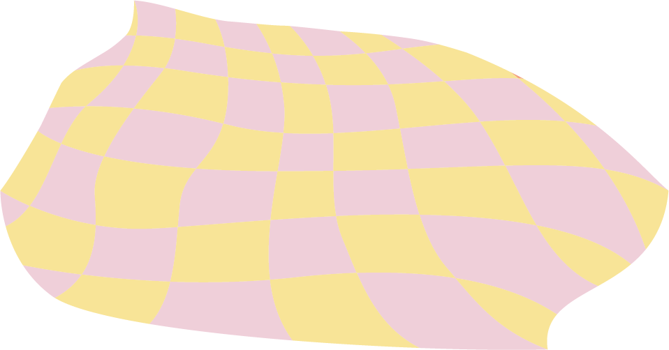
 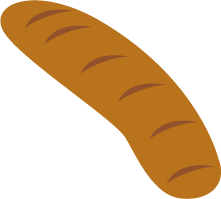
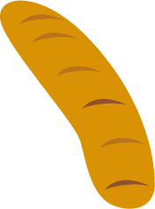
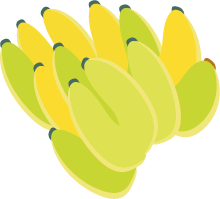
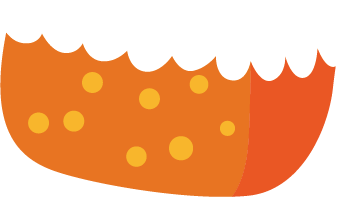
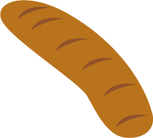
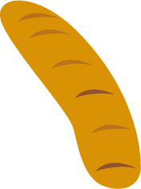
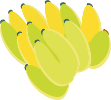
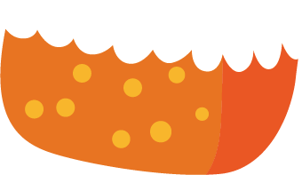
 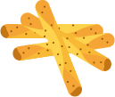
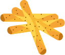
有了美美的籃子和各種野餐用具，就只剩下參加野餐活動啦！那我們還在等什麼呢！趕快去報名野餐活動
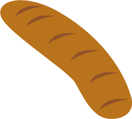
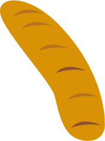
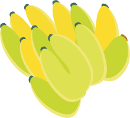
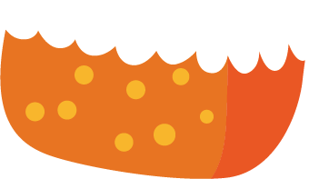
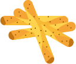
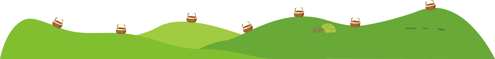